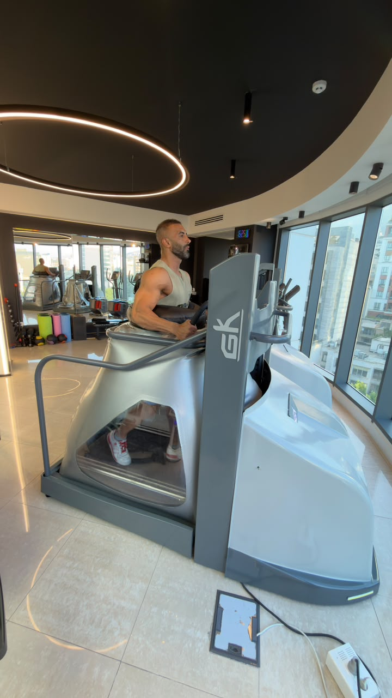
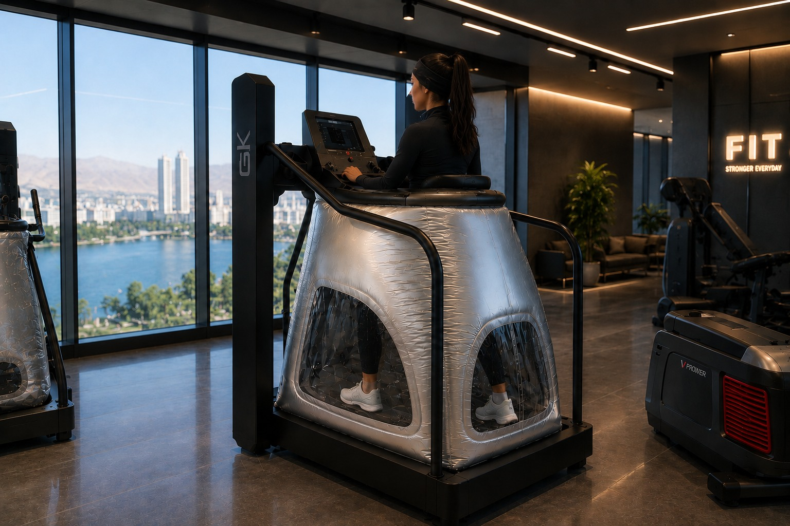
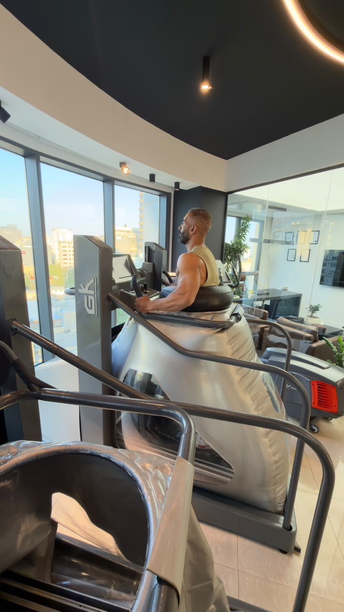

تردمیل کاهندهٔ وزن GK
نگاهی دقیق به فناوری، اجزا و مشخصات فنی دستگاه, طراحی و ساخت

کاهش وزن مؤثر بدن با فشار هوا
کاربر روی تردمیل میایستد و نیمتنهٔ پایین بدن درون محفظهای شفاف و هوابند قرار میگیرد. پمپ، هوای کنترلشده را به محفظه میدمد و فشار مثبت ایجادشده، نیرویی رو به بالا تولید میکند که بخشی از وزن بدن را خنثی میسازد.
میزان این کاهش وزن بهصورت دقیق و از طریق سیستم کنترل فشار قابل تنظیم است، بهطوریکه کاربر میتواند تنها با درصدی از وزن واقعی خود تمرین کند.
مشخصات فنی دستگاه
| میزان کاهش وزن مؤثر بدن | ۱۰ تا ۸۰ درصد (قابل تنظیم) |
|---|---|
| محدودهٔ سرعت | ۰,۲ تا ۱۶ کیلومتر بر ساعت |
| شیب قابل تنظیم | ۰ تا ۱۲ درصد |
| حداکثر وزن کاربر | حدود ۱۸۰ کیلوگرم |
| وزن تقریبی دستگاه | حدود ۳۰۰ کیلوگرم |
| ابعاد تقریبی (ارتفاع × عرض × طول) | حدود ۱۵۲ × ۱۱۵ × ۲۰۰ سانتیمتر |
| رابط کاربری | کنترل بیسیم سرعت، شیب و فشار |
| پایش سلامت | سنسور ضربان قلب |
برای دریافت برگهٔ مشخصات کامل و شرایط فنی نصب، با ما تماس بگیرید.
دستگاه از چه بخشهایی تشکیل شده است؟
هر بخش نقشی مشخص در ایمنی، دقت و راحتی تمرین دارد.
دک تردمیل
سطح متحرک برای راهرفتن و دویدن با سرعت و شیب قابل تنظیم
محفظهٔ تحت فشار
محفظهٔ شفاف و هوابند که نیمتنهٔ پایین بدن را در بر میگیرد.
پمپ فشار هوا
تأمین جریان هوای کنترلشده برای ایجاد نیروی کاهندهٔ وزن
سیستم اندازهگیری بدنی
سنجش شاخصهای بدنی برای تنظیم برنامهٔ تمرین متناسب با کاربر
سیستم کنترل فشار
تنظیم دقیق میزان فشار و در نتیجه درصد کاهش وزن مؤثر
تنظیم ارتفاع کمری با ترمز اطمینان
تنظیم ارتفاع دستگاه متناسب با قد کاربر همراه با ترمز ایمنی
شلوارک هوابندی
ایجاد هوابندی میان بدن کاربر و محفظه برای حفظ فشار
رابط کاربری بیسیم
کنترل آسان تنظیمات دستگاه
سازهٔ مکانیکی
بدنهٔ مقاوم که پایداری و دوام کل مجموعه را تضمین میکند.
سنسور ضربان قلب
اندازه گیری ضربان قلب و پایش شدت تمرین کاربر
مزایای دستگاه تردمیل GK
- ✓تمرین کمفشارکاهش نیروی وارده بر مفاصل
- ✓کنترل تدریجیقابلیت افزایش یا کاهش تدریجی وزن کاربر
- ✓مشاهدهپذیریمحفظه شفاف وضعیت تمرین کاربر را نشان می دهد
- ✓ایمنیترمز اطمینان و پایش ضربان قلب برای تمرین مطمئنتر

گالری دستگاه
